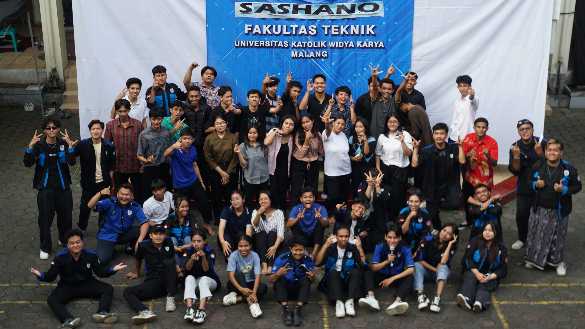

Tentang SASHANO
Badan Mahasiswa Fakultas Teknik Universitas Katolik
Widya Karya Malang mengadakan kegiatan Sarasehan Sharing
dan Outbond atau SASHANO.
Kegiatan ini dilaksanakan untuk membangun dan meningkatkan
kebersamaan serta kerukunan sivitas keluarga besar
Fakultas Teknik.

Tema SASHANO 2025
"Kita adalah saudara, we're belonging together"
Tema tersebut menggambarkan bahwa walaupun mahasiswa
berasal dari daerah, suku, agama, ras, dan budaya yang
berbeda, seluruh keluarga Fakultas Teknik tetap satu
dan bersaudara.
Peserta Kegiatan
SASHANO 2025 tidak hanya melibatkan mahasiswa, tetapi juga
berbagai bagian dari keluarga besar Fakultas Teknik.
- Mahasiswa Teknik Mesin
- Mahasiswa Teknik Sipil
- Mahasiswa Sistem Informasi
- Dosen Fakultas Teknik
- Alumni
- Pengguna
- Civitas akademik Fakultas Teknik
- Pejabat struktural Universitas Katolik Widya Karya Malang
Tujuan dan Makna Kegiatan
SASHANO bukan hanya kegiatan untuk bersenang-senang.
Kegiatan ini menjadi salah satu bentuk partisipasi
mahasiswa terhadap fakultas.
Melalui kegiatan ini, mahasiswa dapat menunjukkan bahwa
kehidupan mahasiswa tidak hanya berfokus pada kegiatan
perkuliahan, tetapi juga pada kebersamaan dan toleransi
dalam keberagaman di Fakultas Teknik.
Kegiatan ini juga menjadi sarana untuk mempererat
persaudaraan dan kekeluargaan antara mahasiswa, dosen,
staf, alumni, dan pengguna di Fakultas Teknik.
Form Informasi Peserta
Silakan isi data berikut untuk mencatat informasi peserta
kegiatan SASHANO.